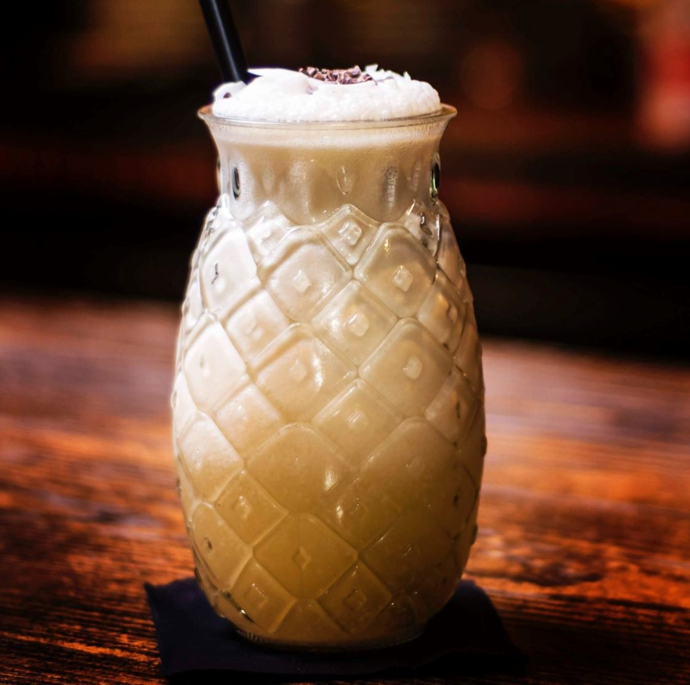

Introduction
Some call Venezuela a Caribbean country, and it is not wrong to include it in that denomination. If not for its coastal waters being Caribbean, then it is the cultural likeness with other Caribbean regions. Indeed, in Simón Bolívar's biography we already saw that the Caribbean islands and Venezuela have ties between them: part of Bolívar's revolution included the liberation of Caribbean islands.
I feel that Cocada embodies some of the best things the Caribbean has to offer: tasty cocktail drinks and typical Caribbean spices. There are many different variations on the Cocada recipe and it also exists in other Latin American countries. For instance, Cocada is served in Brazil too, but it mostly takes on the form of a pudding there; something like thick yogurt.
What makes Cocada so great, is that it may be served cold: many variations include the use of ice cream in the recipe - and don't worry, we will too!
Recipe
- 250 g shredded coconut
- 1/2 cup whole milk
- 1/2 Tbs sugar
- 1/2 cup coconut milk (or more whole milk)
- 3/4 cup vanilla ice cream
- 1 1/2 Tbs cinnamon

Instructions
- Mix all ingredients in a blender, but leave some of the cinamon and shredded coconut dosage.
- Pour mixture in a glass
- Sprinkle with the leftover shredded coconut and cinamon